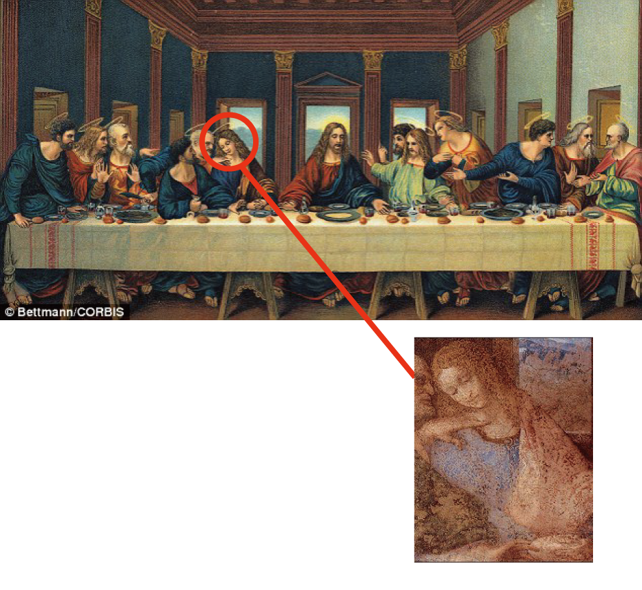

*빨간 박스 정중앙에 커서를 올려보세요
*전 페이지로 돌아가고 싶다면 동그라미를 눌러주세요
다빈치 코드(The Davinci code)*전 페이지로 돌아가고 싶다면 동그라미를 눌러주세요
전 세계를 예수 신성 논란으로 몰아넣은 책, '다빈치코드'는 예수 음모론중 가장 유명한 버전이며, 보는 이로 하여금 마치 1700여년전 사라진
아리우스파의 후예들이 아직도 건재한 듯한 착각을 불러 일으킨다.
이 책은 레오나르도 다빈치의 '최후의 만찬' 그림속에 아주 중요한 비밀코드가 숨어있다고 주장한다.
댄 브라운은 그림속 예수 그리스도 오른편에 앉아 있는 사람이 바로
그 비밀코드라고 말한다. 여성스럽게 그려진 그림속 주인공은 성격속 제자 요한이 아닌 예수의 여인 '막달란 마리아'를 그린 것이라는 주장이다.
이 그림을 그린 레오나르도 다빈치는 비밀조직 '시온수도회'의 수장이며
그 조직이 전력을 다해 지켜온 것은 예수와 막달란 마리아사이의 후손,
즉 예수의 핏줄이라는 그의 주장도 이 책의 줄거리중 하나다. 레오나르도 다빈치가 밀라노의 산타 마리아 텔레 그라치에 교회에 벽화를 의뢰 받았을 때, 그 상징을 그림속에 포함시켰다고 한다.
예수와 막달란 마리아 사이의 V자 구조나 두 사람의 전체적인 구도 M자등은 그 두사람의 관계를 암시하고 있고, 결국 성배를 뜻하는 말 Holy Grail (San Greal)은 Holy Blood (Sang Real) 즉 신성한 핏줄 - 예수의 후손을 의미한다고 이 책은 결말짓고 있다.
다분히 니케아 공의회 당시 이단으로 쫒겨난 아리우스파의 교리를 염두에 두고 집필한 듯한 이 책은 충격적인 내용임에도 많은 증거 자료와 논리적인 개연성을 토대로 단순한 음모론으로 치부해버릴수 없을 만큼의
진지한 토론들을 전 세계에 가져다 주었다. 로마 교황청이 이 책 내용에
대해 공개적인 토론회를 진행한 일은 유명한 일화이다.
1)
2)
아리우스파는 이집트 알렉산드리아 출신의 아리우스가 주장한 기독교 신학이다. 아리우스는 ‘성자’ 예수는 창조된 존재(피조물)이며, ‘성부’에게 종속적인 개념이라는 성격의 주장을 했는데, 삼위일체에 반대하는 그의 주장은 아리우스주의라는 신학적 흐름으로 발전하였다. 이에 대해 로마 가톨릭교회에서는 제1차 니케아 공의회(325년)에서 아리우스는 이단으로 배격되었으며, 아리우스 일파에 대한 공식적인 파문선언이 삽입된 니케아 신경을 채택하였다.
3)

4)

5)
중세부터 현재까지 프랑스의 막후에서 정치를 휘두른 비밀조직. 몇 번이나
왕위를 찬탈하려고 했었고, 프랑스 정부를 위기로 몰았던 비밀조직 '성체회'는
조직체계가 '시온수도회'와 일치했는데, '시온수도회'의 분체이거나, 지도부는
시온수도회일 것이 분명하다.
장미십자단 등으로 이름을 바꾸면서 실체가 알려지지 않는 막후의 비밀세력이다. 또한 프리메이슨단 역시 시온교단과 관련이 있다.
왕위를 찬탈하려고 했었고, 프랑스 정부를 위기로 몰았던 비밀조직 '성체회'는
조직체계가 '시온수도회'와 일치했는데, '시온수도회'의 분체이거나, 지도부는
시온수도회일 것이 분명하다.
장미십자단 등으로 이름을 바꾸면서 실체가 알려지지 않는 막후의 비밀세력이다. 또한 프리메이슨단 역시 시온교단과 관련이 있다.
6)

7)